"Cerdas Dan Berprestasi."
NPSN Sekolah
Akreditasi
Status Sekolah
Lokasi
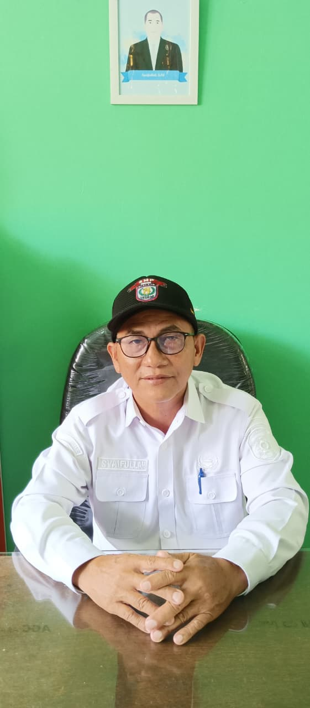
Kepala SMP Negeri 8 Tenggarong
Assalamu’alaikum Warahmatullahi Wabarakatuh, Puji syukur senantiasa kita panjatkan ke hadirat Allah SWT karena atas limpahan rahmat dan karunia-Nya website resmi SMP Negeri 8 Tenggarong ini dapat hadir kembali untuk memenuhi kebutuhan informasi masyarakat luas.
Di tengah pesatnya perkembangan era digital, kehadiran website sekolah ini menjadi sarana penting bagi kami untuk menyampaikan informasi seputar program pendidikan, kegiatan akademik maupun non-akademik, serta prestasi membanggakan yang diraih oleh peserta didik kami di Kecamatan Tenggarong, Kabupaten Kutai Kartanegara.
Mari bersama-sama kita wujudkan generasi muda yang cerdas, tangguh, berakhlak mulia, dan siap bersaing di masa depan.
Komitmen kami dalam membimbing dan mendidik peserta didik.
"Terwujudnya peserta didik yang cerdas, berakhlak mulia, berkarakter profil pelajar Pancasila, serta peduli terhadap lingkungan."
Dengarkan dan saksikan video mars resmi SMP Negeri 8 Tenggarong.
"Mars SMP Negeri 8 Tenggarong - Semangat kebanggaan dan motivasi bagi seluruh siswa dan guru."
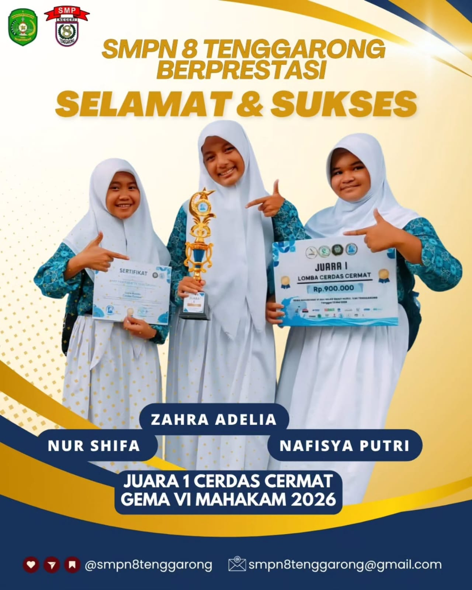
Prestasi AkademikTim cerdas cermat SMPN 8 Tenggarong berhasil menorehkan prestasi gemilang dan keluar sebagai Juara 1 dalam ajang kompetisi Gema VI Mahakam 2026.
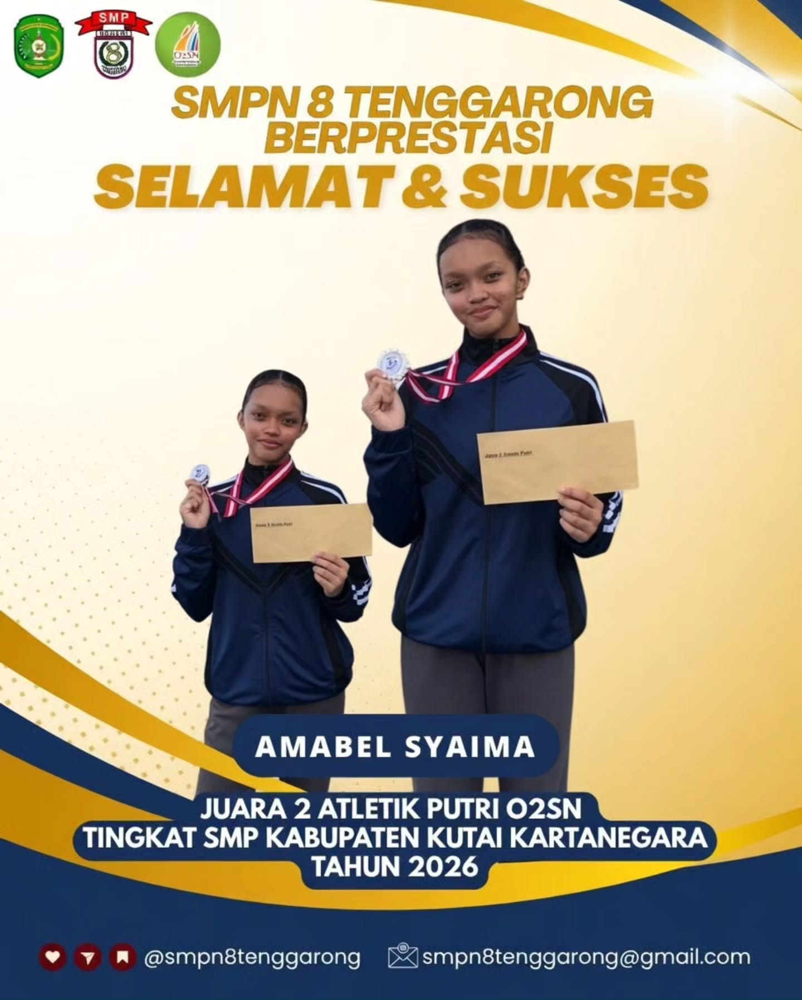
Prestasi OlahragaPrestasi membanggakan ditorehkan oleh Amabel Syaima yang berhasil meraih Juara 2 Atletik Putri pada ajang O2SN tingkat SMP Kabupaten Kutai Kartanegara tahun 2026.
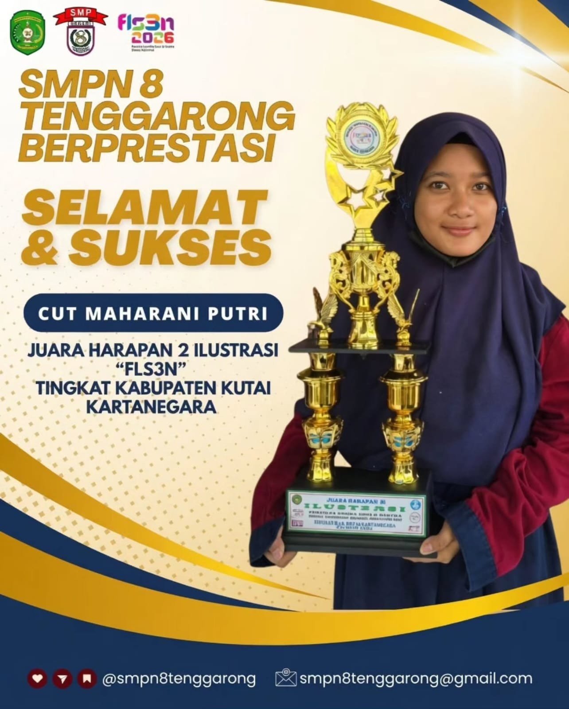
Seni & KreativitasKarya seni ilustrasi terbaik mengantarkan Cut Maharani Putri meraih Juara Harapan 2 pada ajang FLS2N Tingkat Kabupaten Kutai Kartanegara.
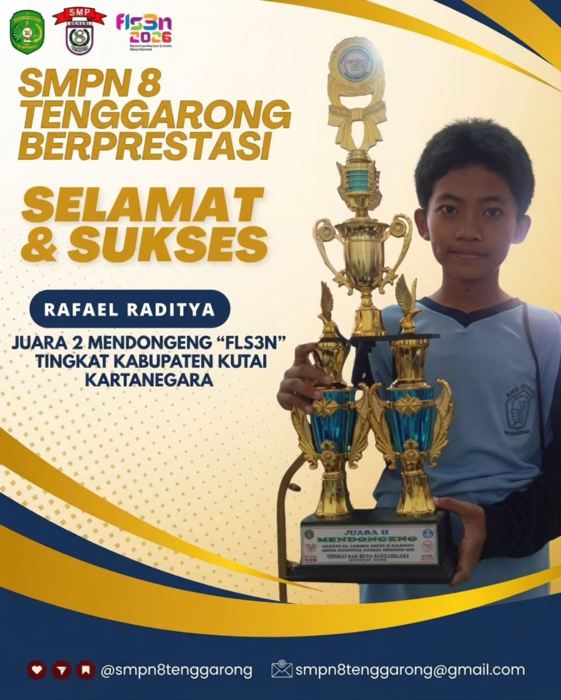
Seni & SastraDengan penjiwaan dan ekspresi luar biasa, Rafael Raditya sukses menyabet Juara 2 Lomba Mendongeng FLS2N tingkat Kabupaten Kutai Kartanegara.
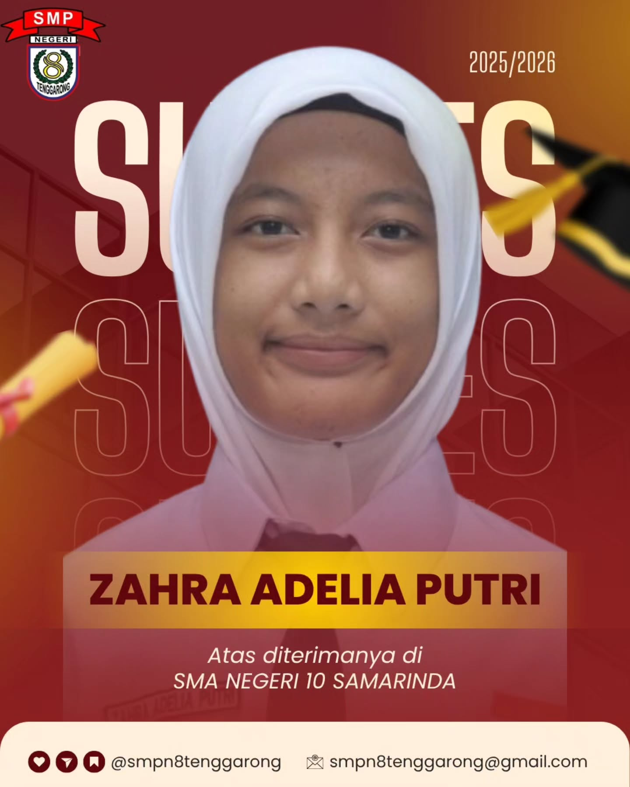
KelulusanKabar membanggakan dari alumni SMPN 8 Tenggarong tahun ajaran 2025/2026 yang berhasil diterima di sekolah unggulan SMA Negeri 10 Samarinda.
Wadah penyaluran bakat, minat, dan pembentukan karakter peserta didik di luar jam pelajaran.
Wajib & Unggulan

Baris Berbaris
Olahraga Prestasi
Seni & Budaya
Kesehatan Remaja
Kerohanian Islam
Momen kebersamaan, kegiatan belajar mengajar, serta ekstrakurikuler siswa.
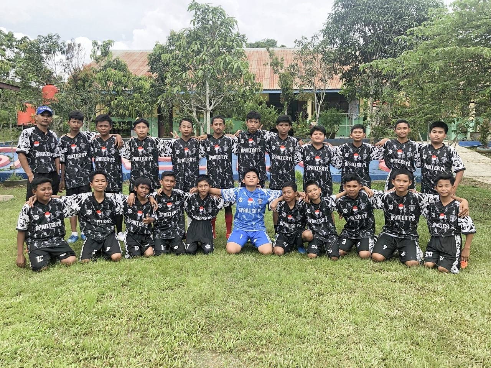
EkstrakurikulerKegiatan latihan rutin sepak bola untuk mengasah teknik, stamina, dan sportivitas siswa di lapangan hijau.
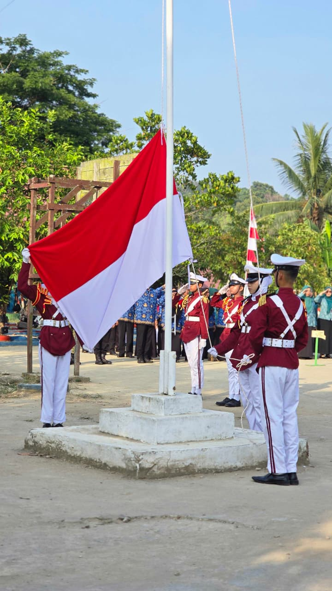
UpacaraUpacara bendera dalam rangka memperingati HUT Republik Indonesia yang dilaksanakan dengan khidmat.
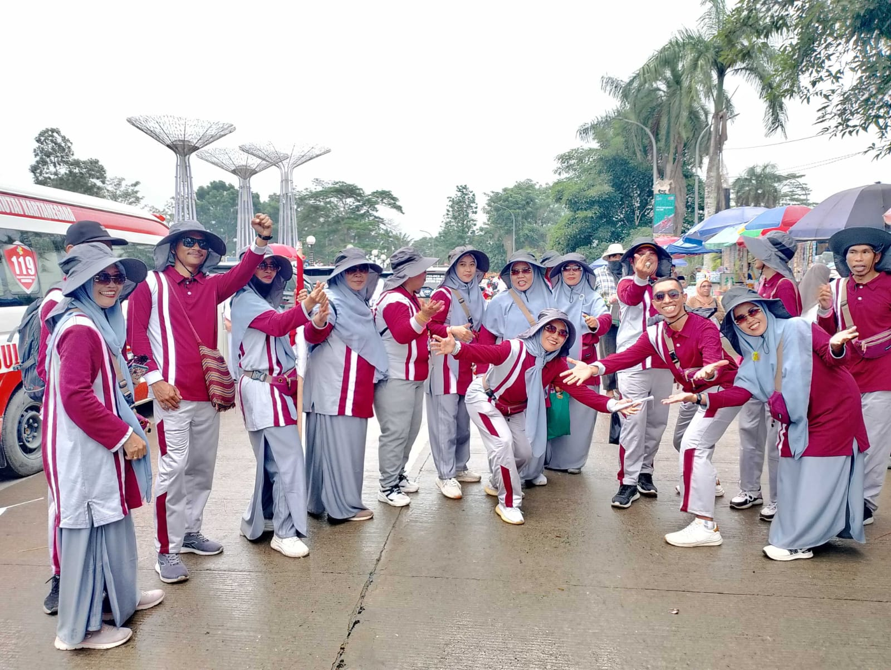
NasionalPartisipasi meriah guru dan siswa dalam pawai memperingati Hari Kemerdekaan Republik Indonesia.
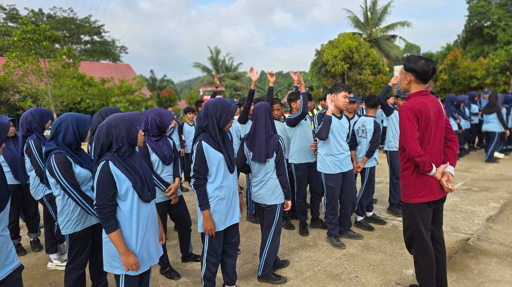
AdiwiyataAksi nyata warga sekolah dalam merawat taman dan menjaga kebersihan lingkungan sekolah secara berkelanjutan.
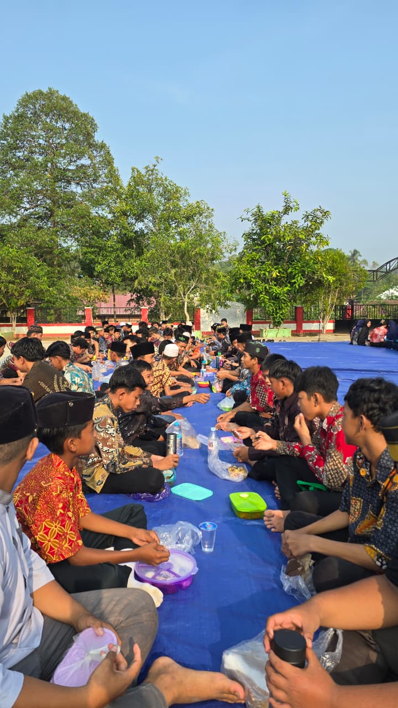
BudayaPelestarian tradisi budaya Kutai makan bersama (Beseprah) dalam rangka menyemarakkan Festival Erau.
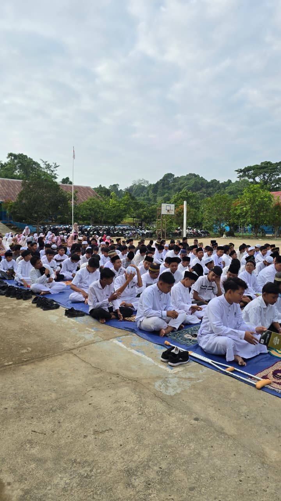
KeagamaanPembiasaan ibadah rutin pagi hari untuk memperkuat keimanan, ketakwaan, dan akhlak mulia siswa.
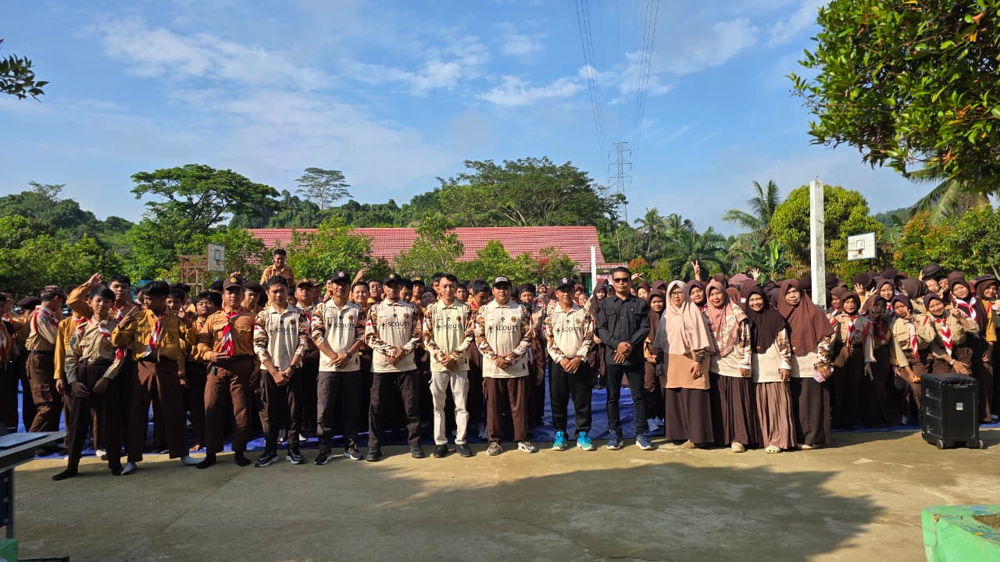
LingkunganEdukasi kreatif pengolahan sampah plastik menjadi barang bernilai guna untuk mengurangi limbah sekolah.
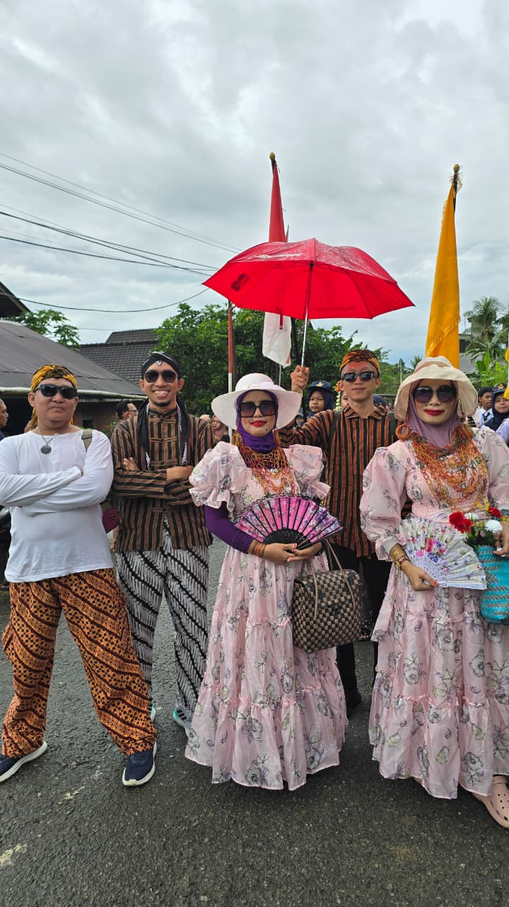
KomunitasKeterlibatan aktif dewan guru dan staf dalam memeriahkan perayaan hari jadi Kelurahan Maluhu.
Pendaftaran Tahun Ajaran Baru kini dibuka! Daftarkan putra-putri Anda melalui jalur Zonasi, Afirmasi, Perpindahan Tugas Orang Tua, maupun Prestasi.
Kunjungi atau hubungi kami untuk informasi lebih lanjut mengenai layanan sekolah.
Jl. Arjuna Rt. 13, Kelurahan Maluhu, Kecamatan Tenggarong, Kabupaten Kutai Kartanegara, Kalimantan Timur 75517.
Jl. Arjuna, Kel. Maluhu